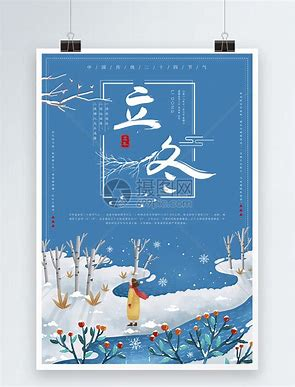
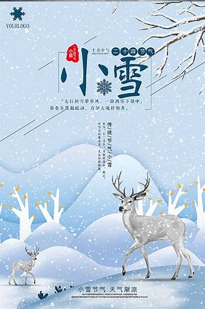

冬天节气
| 节气 | 时间 | 概述 | 图片 |
|---|---|---|---|
| 立冬 | 每年11月7日~8日 | 表示进入冬季，气温开始降低，天气更寒冷。 |  |
| 小雪 | 每年11月22日~23日 | 表示气温更加寒冷，有小雪降落，预示着初冬的到来。 |  |
| 大雪 | 每年12月6日~8日 | 表示气温更低，降雪量增加，预示着冬季已经来临。 | |
| 冬至 | 每年12月21日~23日 | 表示冬季最长的一天，夜晚最长，也是冬季的开始。冬至之后，白天逐渐变长。 | |
| 小寒 | 每年1月5日~7日 | 表示气温更加严寒，天气寒冷干燥。 | |
| 大寒 | 每年1月20日~21日 | 表示一年中最冷的时期，气温达到最低点，需要注意保暖。 |  |